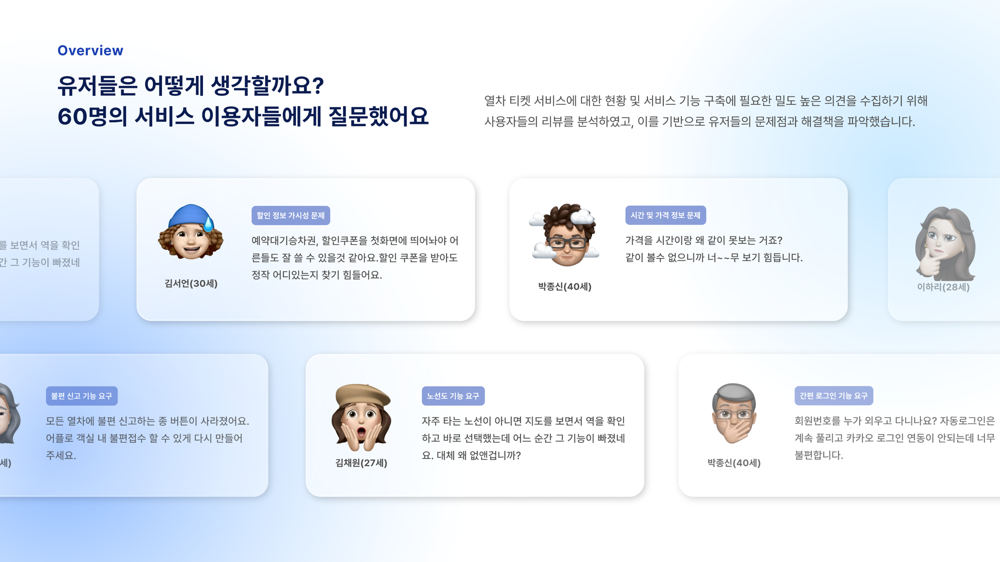
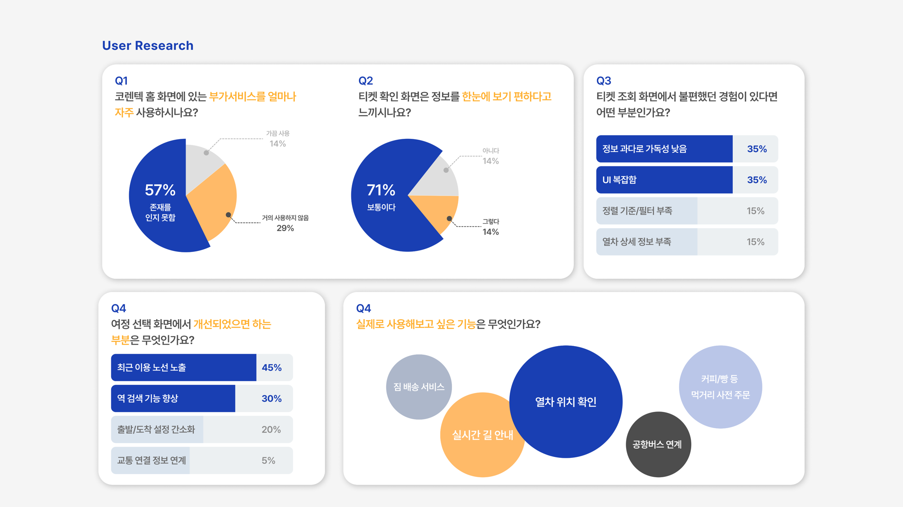
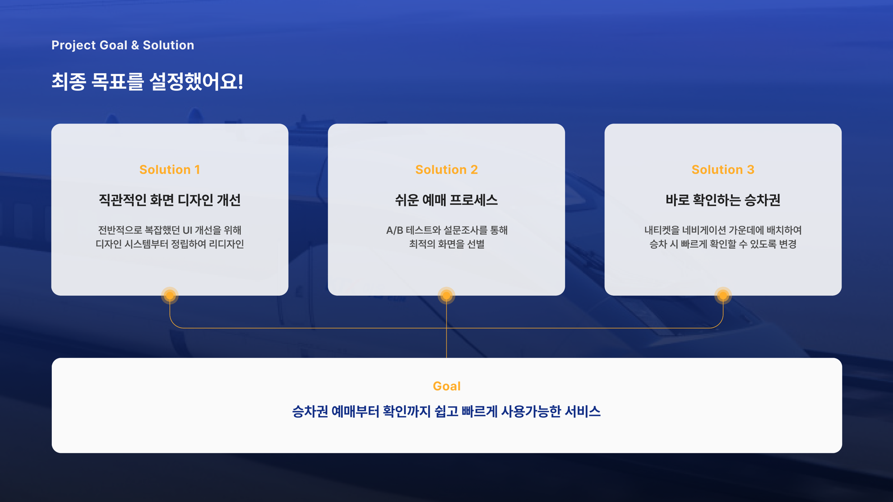
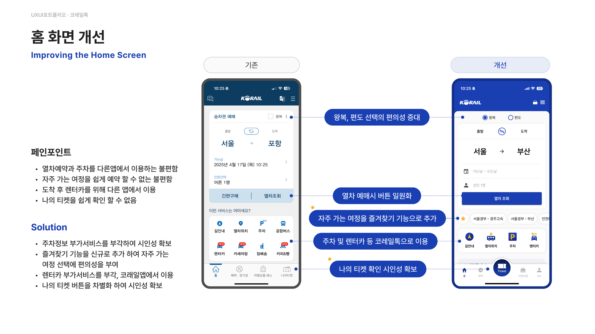
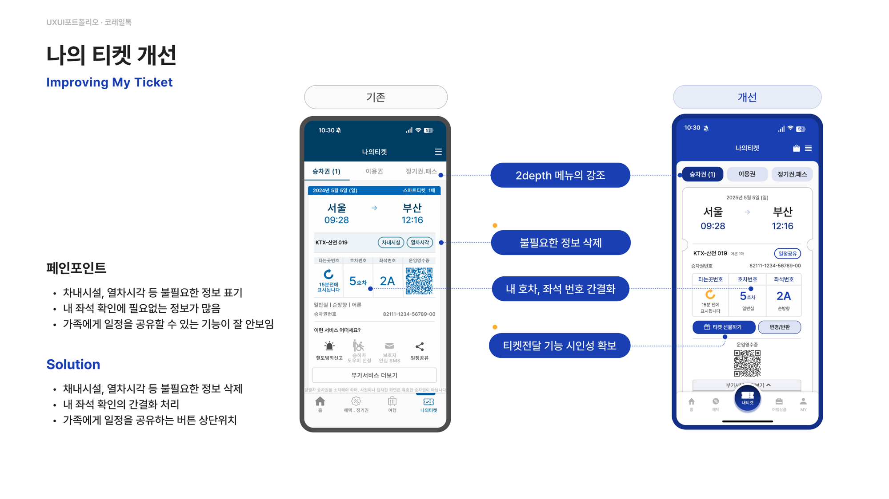
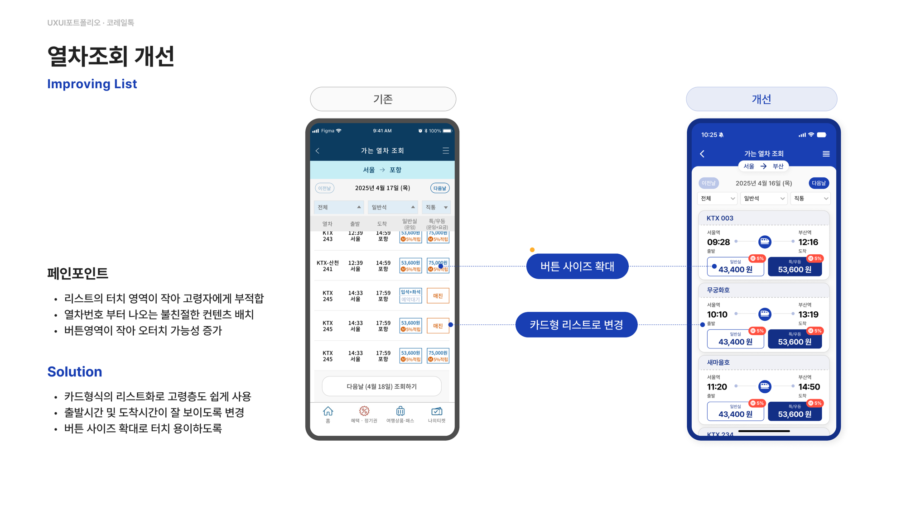
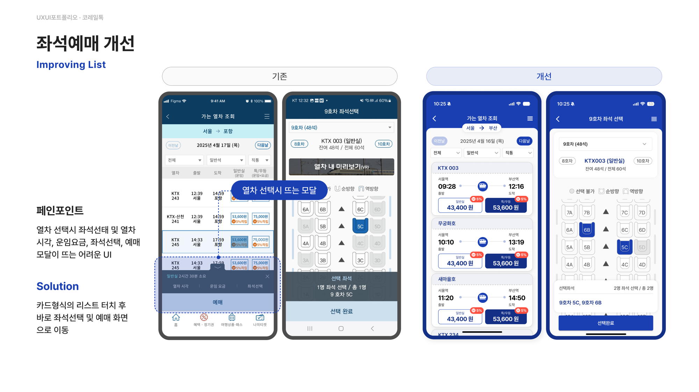
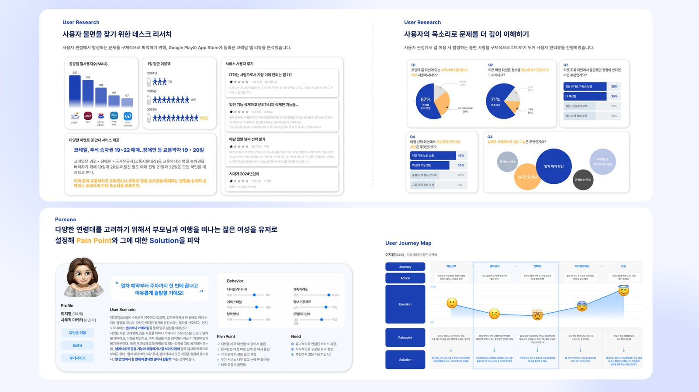

열차 티켓 서비스에 대한 현황과 서비스 기능 구축에 필요한 의견을 수집하기 위해, 60명의 서비스 이용자들에게 직접 물었다.
"할인 쿠폰을 받아도 시간이랑 같이 안 보이니까 너무 보기 힘듭니다", "자동로그인 기능이 있었는데 어느 순간 사라졌어요" — 사용자들의 목소리는 구체적이었다.



사용자 관점에서 발생하는 문제를 더 깊이 이해하기 위해 Google Play·App Store 리뷰를 분석하고, 지방 출장이 잦은 마케터 페르소나 "이지영(34세)"을 세워 저니맵을 그렸다.
목적지 검색이 직관적이지 않고, 좌석 선택 후 부가서비스·주차정보를 확인하려면 정보가 복잡하게 흩어져 있었다.
가족·지인에게 티켓을 공유하는 기능이 눈에 잘 띄지 않고, 자주 가는 여정을 다시 예약하기도 번거로웠다.
디자인 시스템을 정립하는 것부터 시작해, "나의 티켓"을 내비게이션 중앙에 배치하는 등 IA와 와이어프레임을 새로 설계했다.



고령 사용자도 쉽게 쓸 수 있도록 리스트를 카드형으로 재구성하고, 여정선택 → 좌석선택 → 결제로 이어지는 흐름의 시각적 위계를 개선했다.

60명의 설문으로 문제의 범위를 확인하고, 개별 인터뷰로 그 문제가 실제로 어떻게 느껴지는지를 들었다. 숫자만으로는 "왜 불편한지"까지는 알 수 없었다.
4인 팀 프로젝트였던 만큼, 내가 맡은 리서치·IA 영역의 결론이 다른 팀원의 UI 작업으로 자연스럽게 이어지도록 문서화하는 것도 중요한 작업이었다.
사용자가 직접 요청했던 즐겨찾기, 나의 티켓 강조, 카드형 리스트가 모두 최종 화면에 반영됐다.
